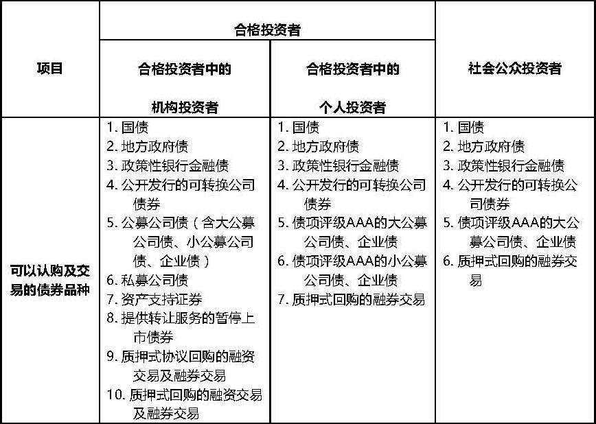

上交所《债券市场投资者适当性管理办法（2017年修订）》答记者问
一、此次修订上交所《债券市场投资者适当性管理办法》的目的是什么？
修订上交所《债券市场投资者适当性管理办法》的目的是在与证监会《证券期货投资者适当性管理办法》（以下简称证监会《办法》）保持一致、有机衔接的基础上，紧紧围绕防控债市风险、确保平稳发展的基本目标，同时兼顾部分债券品种的自身特点，平衡制度的统一性和灵活性，对债券市场投资者适当性制度进行调整。
新办法实施后，原《上海证券交易所债券市场投资者适当性管理办法》（上证发〔2015〕51号）同时废止，本所已发布的其他规定与办法规定不一致的，以《债券市场投资者适当性管理办法（2017年修订）》（以下简称上交所《办法》或本所《办法》）为准。
二、上交所《办法》的修订内容主要涉及哪些方面？
本所《办法》的修订主要涉及四个方面内容：一是统一标准。调整“合格投资者”的标准，与证监会《办法》认定“专业投资者”的标准（证监会《办法》第八条）保持一致，但暂不引入证监会《办法》中关于“申请转化成为专业投资者”的规定，同时新增个人投资者金融资产指标的期限要求（申请资格认定前20个交易日，日均）。二是调整个人投资者的投资标的范围。个人投资者投资的品种除了利率债、大公募公司债、可转债和质押式回购出资外，合格投资者中的个人投资者还可以参与小公募公司债中的高信用等级债券（债券信用评级AAA）的认购、交易。三是建立投资者适当性动态调整机制。为加强对普通投资者的保护，规定在债券出现评级下调、违约等风险情形时仅允许合格投资者中的机构投资者买入。四是强化证券经营机构责任。落实层层把关、严控风险的要求，细化证券经营机构投资者适当性管理责任及义务。
三、上交所《办法》对已上市交易的存量公司债券（含企业债券）投资者适当性标准有无调整？
有调整。为便于投资者理解，加强投资者保护，同时保证制度统一性，根据证监会《办法》第十四条规定，本所《办法》将存量公司债券统一纳入本次投资者适当性管理办法的管理范围。
四、上交所《办法》对投资者适当性标准进行了调整，不满足适当性新标准的投资者该如何处理其现在持有的债券？
2017年7月1日起，投资者应该根据本所《办法》的规定，在其所属投资者类别所对应的债券范围内进行投资；根据本所原有规则买入的债券，如超出本所《办法》规定的投资范围的，投资者可以卖出或者继续持有到期，不得再行买入。
具体而言，2017年7月1日起，各类投资者允许的投资标的范围如下：

规则另有规定的除外。
五、上交所《办法》对证券经营机构的职责有何要求？
本所《办法》强化了证券经营机构前端监控投资者适当性管理的责任。证券经营机构应当建立债券市场投资者适当性管理制度，做好前端技术控制，承担确认合格投资者具有债券投资风险识别能力和承受能力的义务，并动态跟踪和持续了解合格投资者条件。
个人投资者应理性参与本所债券市场，增强风险防范意识，树立正确的投资理念，根据自身判断审慎做出独立投资决定，知悉并自行承担债券市场投资风险。
六、上交所《办法》施行在现券方面的时间安排？
自本《办法》发布之日起至2017年7月1日止（不含），债券投资者适当性管理沿用原《办法》的规定。2017年7月1日起，债券投资者适当性管理适用《办法》的规定。《办法》实施前按照原规则买入债券的投资者，在《办法》实施后不符合相应的债券投资者适当性管理规定的，不得再行买入该等债券，对按照原规则买入的债券可以选择卖出或者继续持有。
同时，根据本所原有规则认定的合格投资者，均需根据本所《办法》的规定，在2017年7月1日之前重新进行评估认定及报备；符合合格投资者标准的，方可继续买入相应投资范围的债券。
七、上交所《办法》对回购业务如何规定，如何实现与《回购风控指引》的衔接？
合格投资者中的机构投资者可以参与债券质押式回购、债券质押式协议回购的融资交易和融券交易。合格投资者中的个人投资者及公众投资者可以参与本所债券质押式回购的融券交易。
为衔接《中国证券登记结算有限责任公司、上海证券交易所、深圳证券交易所债券质押式回购交易结算风险控制指引》，不满足本所《办法》要求的投资者参与债券质押式回购融资交易、债券质押式协议回购融资融券交易的，应当于2017年12月9日前了结全部质押式回购融资交易及质押式协议回购融资融券交易，期间不允许增加回购交易未到期余额。
八、债券发行人董监高及持股超过5%的股东、资产支持证券原始权益人及其关联方在适当性管理方面是否有特殊安排？
此类投资者豁免相应债券的合格投资者限制。具体而言，发行人的董事、监事、高级管理人员及持股比例超过5%的股东，可以认购及交易该发行人发行的公司债券，资产支持证券原始权益人及其关联方认购及交易相应的资产支持证券,不受本所《办法》第六条规定的合格投资者条件的限制。
九、上交所《办法》施行后如何进行合格投资者报备？
本所《办法》施行后，证券经营机构须通过本所网站的会员/证券机构专区提交合格投资者账户名单。直接持有或者租用本所交易单元参与债券认购及交易，不需要报备合格投资者。
债券发行人董监高及持股超过5%的股东、资产支持证券原始权益人及其关联方认购及交易相应债券的，由证券经营机构核实资格后，开通相应债券的认购及交易权限。
十、上交所《办法》中涉及的合格投资者中的机构投资者指的是其第六条中的哪些投资者？
合格投资者中的机构投资者指的是本所《办法》第六条第（一）、（二）、（三）、（四）项规定的投资者，以及中国证监会和本所认可的其他合格投资者中的机构投资者。
十一、上交所《办法》第十一条规定的债券投资者适当性管理动态调整机制中，债券出现评级下调、最近一年亏损等风险事件信息是否由上交所统一发布？
风险事件信息由发行人在本所网站对外公告披露，同时，为便利市场参与人及时获取该信息，本所对仅限合格投资者买入的债券及仅限合格投资者中的机构投资者买入的债券分别进行标识，每个交易日向证券经营机构及行情商发布的数据文件中提供，并在本所官方网站披露供投资者查询。